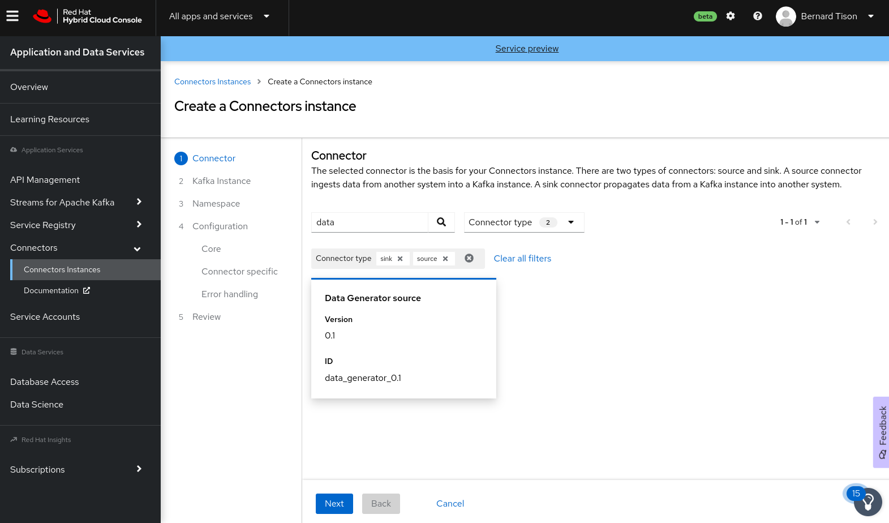
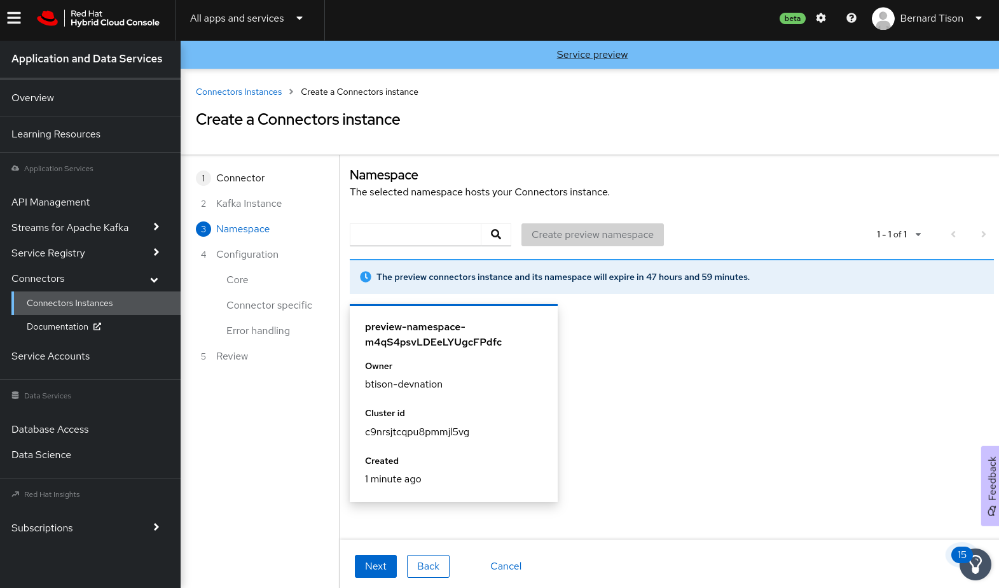
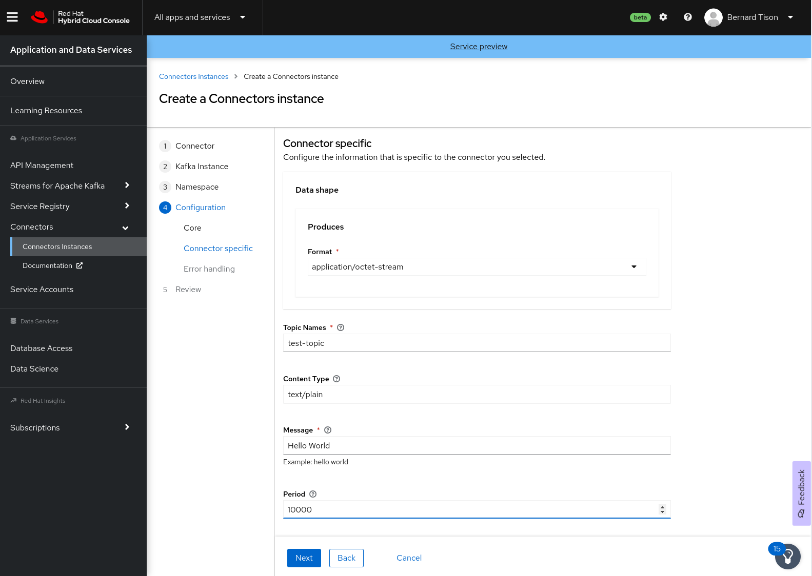
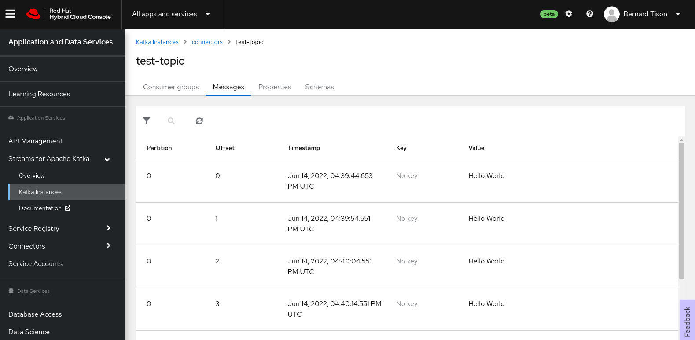

Create source and sink OpenShift Connectors instances
A source connector consumes events from an external data source and produces Kafka messages. A sink connector consumes messages from a Kafka topic and sends them to an external system.
Create a Connectors instance for a data source
For this workshop, you create an instance of the Data Generator source connector. This connector does not actually consume data from an external system, but produces a Kafka message to a topic at a configurable interval.
-
On the Application and Data Services page on console.redhat.com, select Connectors and click Create Connectors instance.
-
Select the connector that you want to use for a data source.
You can browse through the catalog of available connectors. You can also search for a particular connector by name, and filter for sink or source connectors.
For example, to find the Data Generator source connector, type data in the search box. The list filters to show only the Data Generator Connector card.
Click the card to select the connector, and click Next.
 -
For the Kafka instance, click the card for the Streams for Apache Kafka instance that you configured for connectors, and then click Next.
-
On the Namespace page, click Create preview namespace to provision a namespace for hosting the connector instances that you create. This evaluation namespace will remain available for 48 hours. You can create up to four connector instances per namespace. Once the namespace is available, select it and click Next.
 -
Configure the core configuration for your connector as follows:
-
Provide a name for the connector.
-
Type the Client ID and Client Secret of the service account that you created for your connectors, then click Next.
-
-
Provide the connector-specific configuration. For the Data Generator connector, provide the following information:
-
Data shape Format: Accept the default,
application/octet-stream. -
Topic Names: Type the name of the topic that you created for connectors. For example,
test-topic. -
Content Type: Accept the default,
text/plain. -
Message: Type the content of the message that you want the connector instance to send to the Kafka topic. For example, type
Hello World!. -
Period: Specify the interval (in milliseconds) at which you want the connector instance to send messages to the Kafka topic. For example, specify
10000, to send a message every 10 seconds.Click Next to continue.
-
-
Configure the error handling policy for your connector instance.
The available options are:
-
stop - (the default) The connector instance shuts down when it encounters an error.
-
log - The connector instance sends errors to its log.
-
dead letter queue - The connector instance sends messages that it cannot handle to a dead letter topic that you define on the Streams for Apache Kafka instance.
Accept the default stop option, and click Next.
-
-
Review the summary of the configuration properties and then click Create Connector.
Your connector instance should now be listed in the table of connectors. After a couple of seconds, the status of your connector instance will change to the Ready state, and it will start producing messages and sending them to its associated Kafka topic.
From the connectors table, you can stop, start, and delete your connector, as well as edit its configuration, by clicking the options icon (three vertical dots).
To verify that the connector is actually generating messages to the topic, you can leverage the Message viewer functionality of the Streams for Apache Kafka UI.
-
In the Application and Data Services page on console.redhat.com, select Streams for Apache Kafka > Kafka Instances.
-
Click the Kafka instance that you created for connectors.
-
Click the Topics tab and then click the topic that you specified for your source connector instance.
-
Click the Messages tab to see a list of
Hello World!messages.
-
Create a Connectors instance for a data sink
A sink connector consumes messages from a Kafka topic and sends them to an external system.
For this workshop, you use the HTTP Sink connector which consumes which consumes Kafka messages from one or more topics and sends the messages to an HTTP endpoint.
The webhook.site service offers a convenient way to obtain a general-purpose HTTP endpoint. Open a new tab in your browser and navigate to https://webhook.site. The page displays a unique URL that you can use as a data sink.

-
In the Application and Data Services page on console.redhat.com, select Connectors and click Create Connectors instance.
-
To find the HTTP Sink connector, enter
httpin the search field. Click the HTTP Sink connector card and then click Next. -
Select the Streams for Apache Kafka instance for the connector to consume from.
-
On the Namespace page, click the eval namespace that you created when you created the source connector. Then click Next.
-
Provide the core configuration for your connector:
-
Type a unique name for the connector.
-
Type the Client ID and Client Secret of the service account that you created for your connectors and then click Next.
-
-
Provide the connector-specific configuration for your connector. For the HTTP Sink connector, provide the following information:
-
Data shape Format: Accept the default,
application/octet-stream. -
Method: Accept the default,
POST. -
URL: Type your unique URL from webhook.site.
-
Topic Names: Type the name of the topic that you used for the source Connectors instance. For example,
test-topic.
-
-
Set the error handling policy to stop.
-
Review the summary of the configuration properties and click Create Connector.
Your connector instance will be added to the table of connectors. After a couple of seconds, the status of your connector instance will change to the Ready state. The connector consumes messages from the associated Kafka topic and sends them to the HTTP endpoint.
Open the browser tab pointing to webhook.site to see the HTTP POST calls with the Hello World! messages that you defined in the source connector.

You have created your first Red Hat OpenShift Connectors instances. From here, you can create other source and sink connectors to a variety of external systems and cloud services.